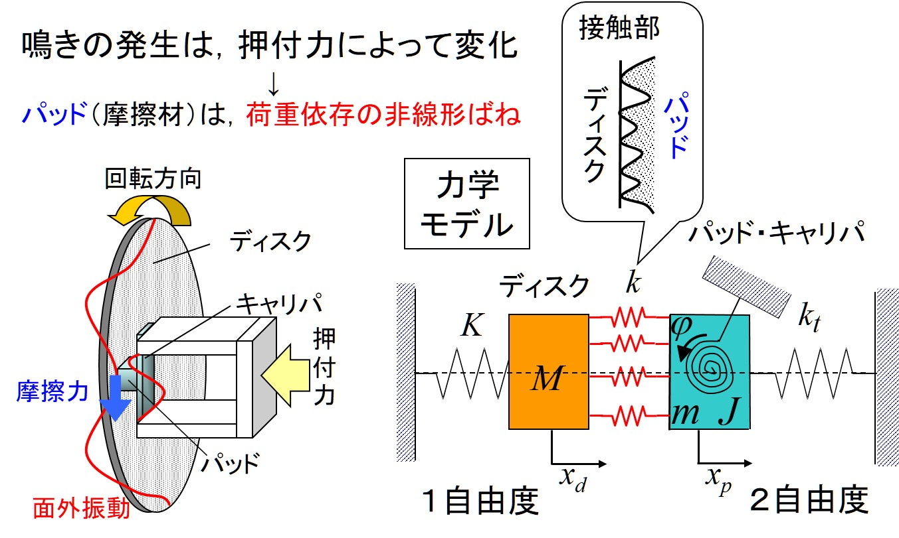
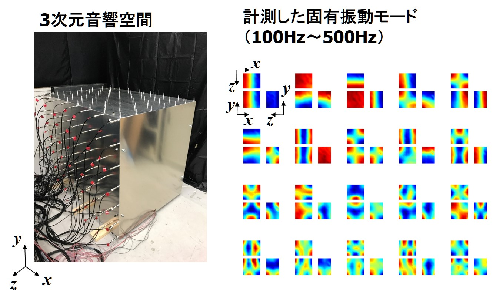
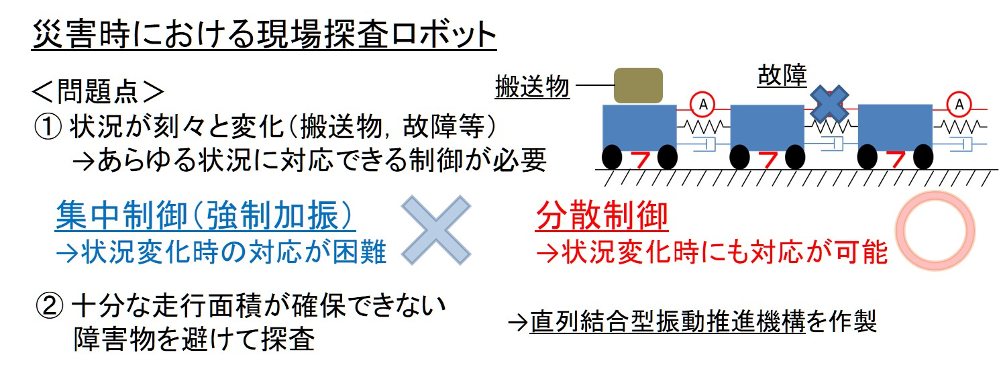
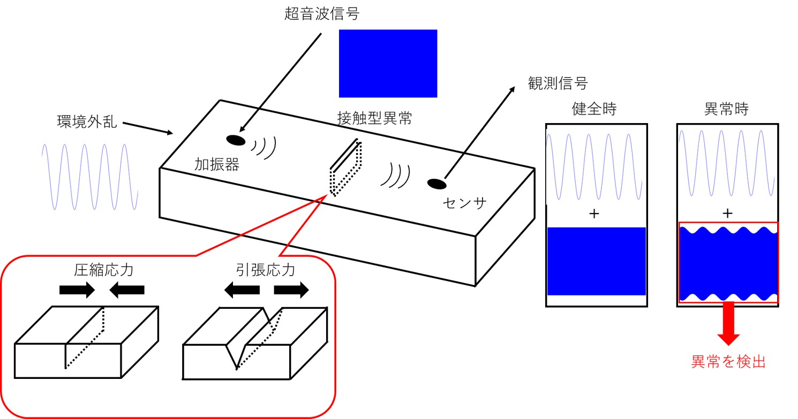

お知らせ
2024/04/01HPのデザインを新しくし，スマートフォンに対応しました
2022/04/01機械ダイナミクス研究分野 大浦・田中研究グループ新HPを立ち上げました
更新情報
2026/03/16【受賞】栗田名誉教授，大浦准教授，田中講師が楕円振動を用いた微小部品の分別搬送のテーマで日本機械学会関西支部賞（研究）を
受賞しました．
new!
2025/12/05【講演論文】第22回評価・診断に関するシンポジウムにて院生1名が発表しました．
2025/12/01【講演論文】日本機械学会TRANSLOG2025にて大学院生1名が発表しました．
2025/09/16【講演論文】日本機械学会2025年度年次大会にて院生1名が発表しました．
2025/09/01【講演論文】日本機械学会Dynamics & Design Conference 2025にて大学院生1名が発表しました．
2025/06/27【査読論文】楕円振動を用いた微小部品の分別搬送に関する論文が機械学会英文誌Mechanical Engineering Journalに採択されました.
2025/04/25【査読論文】10th Asia Pasific Workshop on Structural Health Monitoringにて院生1名が発表した論文が公開されました.
2024/12/06【講演論文】ASME IMECE 2024および第22回評価・診断に関するシンポジウムにて院生1名が発表しました.
2024/10/24【査読論文】TSME-ICoME 2023で発表した論文がAIP Proceedingsに公開されました．
2024/09/19【講演論文】Dynamics & Design 2024にて院生2名が，2024年度年次大会にて院生1名が発表しました.
2024/08/29【特許】研究室修了生の修士論文の一部を基に
特許第7546252号「接触型異常検査装置、コンピュータプログラムおよび接触型異常検査方法」
が登録されました.
2024/08/25【査読論文】薄肉円筒工作物に生じるびびり振動に関する論文が日本機械学会論文集に掲載されました.
2024/03/05【査読論文】非線形波動変調の線形時変伝達関数モデルに関する論文がJournal of Vibration and Controlにて早期公開されました．
大浦・田中研究グループの概要
大浦・田中研究グループでは、振動・騒音の抑制や振動を利用した効率の良い運動制御に関する研究に取り組んでいます。中でも、機械の振動や音を測定し、その発生メカニズムを解明することで、低騒音化や性能向上を目指しています。さらに、生体を模倣した効率がよく環境の変化に強い運動制御を実現することで、新しい機械駆動法や振動測定法を提案しています。また、機械や構造物の振動・波動計測を行い、信号解析に基づき損傷検出するシステムも開発しています。
高校物理で学ぶ力学（特に物体の運動とエネルギーや波の単元）を基礎として数学や電磁気学を交えつつ発展させながら、様々な振動・音現象を表現することで課題解決に向けた道筋を論理的に示すことを目指しています。また、研究活動を通じて、社会で働くために必要な知識活用力・自立行動力・エンジニアとしてのコミュニケーション能力を身に着けられるような指導を心がけています。
研究テーマ
快適な機械の創造

自動車や自転車のブレーキを作動させると、"キーッ"という甲高い音（鳴き）が鳴ることがあります。この音がなぜ発生するか解明するために、実験による振動・音計測や物理モデルによる解析を行っています。また、物理モデルに基づく対策を提案しています。
構造物・空間特性計測

機械や建物を構成する構造物や自動車車室などの音響空間には、固有振動という振動・騒音の原因となるものがあります。振動・騒音対策を検討するために、固有振動を実験で計測します。制御を用いることで、これまで計測が難しかった対象の固有振動計測を実現しています。
高効率な動作の追求

生物は、体が動きやすい動作があります。この動きをしているときが一番エネルギー消費が少ない動作になります。ロボットを効率よく動かすために、エネルギー消費が少ない動作を自動的に行う制御を開発しています。
小さな異常を発見

機械や構造物を長く使い続けるためには、小さな異常を発見・監視し、問題が大きくなる前にメンテナンスする必要があります。超音波は目に見えない内部の小さな異常を見つけることができます。超音波が伝播する過程を計測・可視化したり、超音波振動計測による異常評価法を開発しています。

Copyright (C) Univerity of Shiga Prefecture. All Rights Reserved.